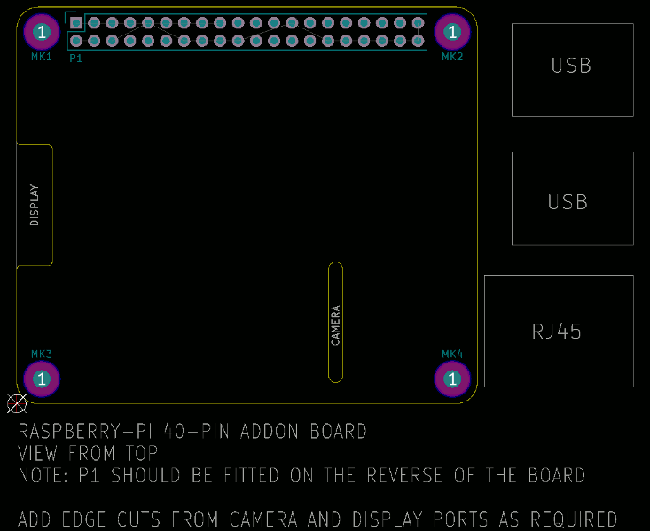

This project template is the basis of an expansion board for the
Raspberry Pi ARM
boards that have the 40-pin header.
This includes the following models to date:
This base project includes a PCB edge as specified in the Raspberry Pi Hat Specification with the connectors placed correctly to align the two boards. All IO present on the Raspberry-Pi board is connected to the project through the 0.1" expansion headers. Cutouts have also been defined for the camera and the display connctors.
The board outline looks like the following:

(c)2016 Ashton Johnson
(c)2016 Kicad Developers